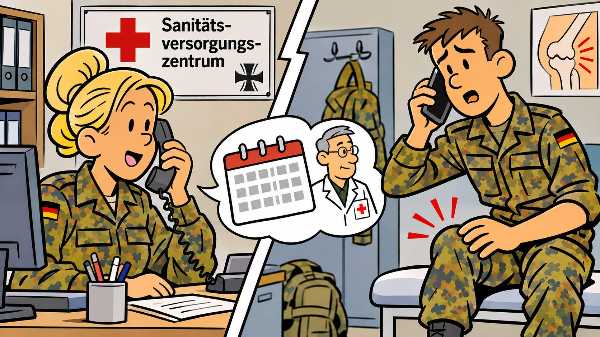

Medizinmilitärische Dialoge · 01 · A2
Telefonische Terminvereinbarung beim Truppenarzt

Terminzettel
Hören Sie das Telefongespräch und ergänzen Sie den Terminzettel.
Transkript – Lückentext
Hören Sie das Telefongespräch noch einmal und ergänzen Sie die fehlenden Wörter. Achten Sie auf die Groß- und Kleinschreibung.